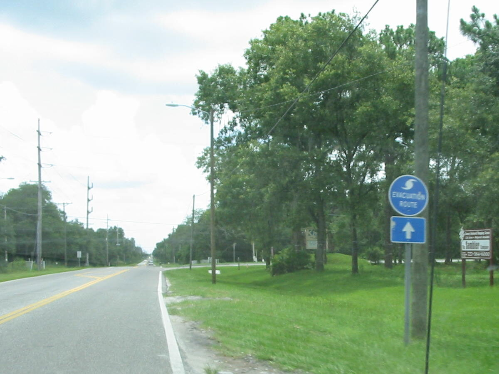

Roads & Safety
Road Rules
What good is rural character without safe ways to get around?
Lighting, crossings, road improvements and reliable access belong at the heart of planning for people.
Shapes
TrafficLightingAbility to Improve Roads
Affects
SafetyMobilityEmergency Access